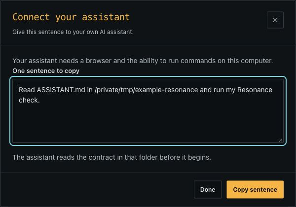
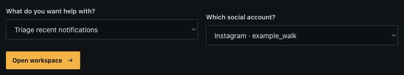
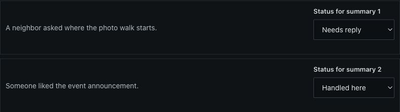

Resonance user manual
Start in Codex or Claude Code
We recommend starting in your assistant’s desktop app. Open the Resonance folder as a local project and ask for a draft in that chat. Use the optional dashboard when you want to browse saved accounts, posts and reports.
Use RES in a project chat
Download the RES source ZIP and extract it. Choose the folder containing README.md, AUTHORING.md and ASSISTANT.md.
- Codex
- Add or open the extracted folder as a local project. Select it in the sidebar and start a chat in that project.
- Claude Code
- In Claude Desktop, open Code, choose a local session, then Open folder and select Resonance. In the terminal edition, open the folder in your terminal and run
claude.
The folder supplies the RES instructions. The assistant supplies the writing. A first draft needs no running RES server or social sign-in. For a check of live posts, ask the assistant to read ASSISTANT.md and run your RES check. It needs local Python, saved account information and a supported browser or connector with the right account signed in.
Open the optional dashboard
In the same project chat, ask “Start the local RES server from this folder and open it in the app’s browser or preview pane.” The source edition needs Python 3.9 or later. On Windows install the dependencies in requirements.txt first. The command is python3 server.py on Mac or Linux and py -3 server.py on Windows. Open http://127.0.0.1:4317 in Codex’s browser, Claude Desktop’s local Browser pane or your usual browser. Keep the server running while using the dashboard.
1. Copy the request in RES
Save the social account you want to review. On Today, choose Ask my assistant, then Copy sentence. RES includes the folder for your installation.

2. Paste it into Codex
Open a new local chat in Codex on the computer running RES. If asked to choose a project, select the folder named in the copied sentence. Paste the full sentence into the message box, then send it. Use the path from your own copy.
Read ASSISTANT.md in /private/tmp/example-resonance and run my Resonance check.
I checked three recent posts. One may need a closer look. I saved the report in RES. Older posts were outside this check.
Codex needs access to that folder, a way to run local commands and access to the relevant signed-in browser. If it asks you to sign in, use the platform in the browser it identifies. Enter your password there.
3. Review the result in RES
Open Today → Latest assistant report or Check history. Read which accounts and posts were covered and what Codex could not inspect. Open a finding to decide what to do.
Triage notifications
The source edition and Windows desktop app include Social inbox. This example uses a fictional Instagram account.
1. Choose the account and task
Open Today → Social inbox. Choose Triage recent notifications and one saved account, then Open workspace.

2. Take the scoped request to Codex
Read the scope under Ask your assistant. Review the disclosure, check the authorization box, choose Prepare assistant request, then Copy assistant request. Paste the complete request into your Codex chat. It covers up to ten visible notifications. Opening the list may clear a badge.
3. Bring the summaries back
In the same RES tab, paste one short summary per line and choose Add summaries. Choose Needs reply for a question, or Handled here to mark your local decision. Reloading or closing the tab clears these notes.

For help answering one person, choose Draft replies for one private conversation when setting the scope. Review the draft before deciding whether to send it yourself.